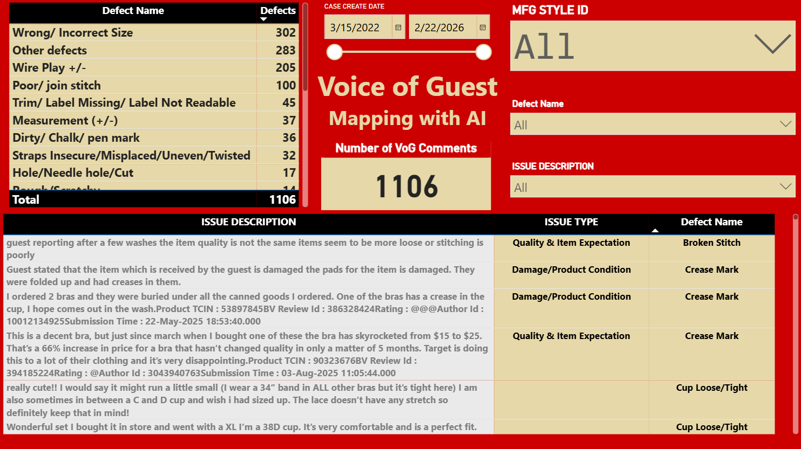

⚙The Build Story
This section is written as one continuous story. Each step naturally leads to the next, exactly how the solution evolved in a real factory environment.
Data sourcing & cleaning — making reality trustworthy
The first problem was not “analytics.” The first problem was the reliability of the raw inputs. The factory had a database and historical Excel files, but the data was not captured for analysis. Entry was partially manual and partially automatic, which created repeated patterns of errors: inconsistent date formats, typos in IDs, buyer naming mismatch, and inconsistencies between dates and quantities. With large volumes of historical files, even a simple request like “top defects in endline” became risky because the ranking could be wrong if the base inputs were wrong.
I cleaned the data systematically: I standardized date formats, corrected repeated error patterns across styles and product IDs, and validated fields against official references. I also protected the operator workflow: instead of changing the entry structure (which could disrupt daily operations), I kept the source structure and designed the transformation inside Power BI.
Power BI model structure — turning files into analytics
Once the data was clean enough to trust, the next problem was structure. The inspection files stored defect names as columns and defect counts as row entries. This layout is operator-friendly, but it is not analytics-friendly: there is no clean “Defect Name + Quantity” structure and no unique record key. In that structure, defect ranking becomes unstable when you slice by buyer, line, floor, product, or date.
I solved this by creating a unique record ID and building a defect fact layer: I duplicated the table and unpivoted the defect columns so defects became rows. Then I linked the unpivoted defect table back to the original context table with a one-to-many relationship. This is the moment the system moved from “data loaded” to “analysis works correctly.”
Inline–Endline–Prefinal unification — building a system, not a report
After endline worked, the requirement expanded: inline and prefinal needed to be included and compared. The challenge was that each stage had different file structures. But for meaningful industrial use, stages must align—because improvement is not about one checkpoint, it is about how defects move across checkpoints.
I aligned the stage datasets by standardizing fields and adding an inspection-stage identifier. Then I appended them into a central database table. From that central database, I created the unpivoted defect fact so defect ranking works across all stages consistently. Now the report can compare Inline vs Endline vs Prefinal, enabling correlations and faster root-cause thinking.
Scalable folder database — scale without breaking people
As the model grew, a new constraint appeared: Excel cannot handle unlimited scale in a single file. But moving to a complex system could overload entry operators and reduce data quality. The solution had to scale while staying human-friendly.
I designed a folder-based ingestion approach: instead of one massive file, data is stored as smaller standardized files inside folders, and Power BI reads the folder. When a new file is dropped into the folder, it becomes part of the dataset automatically. Templates were also improved with lookups and error flags so mistakes can be caught at entry stage.
Buyer final + RCA — aligning factory action to customer judgement
Internal final data existed but reliability was a concern, so buyer final inspection reports became the preferred source. Buyer reports are valuable, but they come with different formats and naming, and they often group categories like measurement, workmanship, and packaging. That structure is not directly compatible with factory stage data.
I transformed buyer reports using Power Query, created the necessary DAX calculations, built a model for final data, and then integrated it with the factory inspection ecosystem. This enabled investigations that start from buyer final outcomes and trace backward into earlier stages, operations, and time context—supporting 5-Why and PDCA actions.


Cutting / recut / fabric integration — connecting upstream reality
As quality decisions matured, the analysis needed upstream traceability. Cutting and recutting can be integrated with consistent keys, but fabric data is often contract-based and does not naturally map to style. Without reference tables, upstream tracing becomes unreliable.
I built dedicated reference tables: one to map style with PID and item type, and another to connect fabric using contract numbers. With that, the model could support investigation across upstream and downstream stages instead of limiting root cause to only sewing or inspection.
Similar style + images — predictive context without slowing the report
The next goal was to add predictive context using product images and historical similarity. Pulling images directly into Power BI can slow performance, and access to internal links may not be stable for every user. So the solution needed to be usable and fast.
I created an image library reference approach and built an “upcoming style vs similar style” mapping so selecting an upcoming style surfaces similar-style history. This gives teams practical readiness: using historical signals to prevent likely defects before ramp-up.

VoG integration — closing the loop with customer feedback
Finally, stakeholders wanted customer reviews analyzed and converted into defect language. Manual mapping is impossible at scale. The key was building consistent rules so the customer voice becomes operationally usable instead of subjective interpretation.
I implemented an AI-assisted classification workflow with strict rules: every row gets a sentiment, and each negative review gets one dominant issue. Price/value complaints take highest priority; otherwise the main complaint is mapped to the official defect list whenever possible, and only becomes a new issue name when no approved match exists. With this, VoG becomes traceable into production actions.

C&C correlation — governance and consistency
Beyond analysis, factories need governance: consistency across managers, officers, inspectors, and external (buyer) results. Correlation and cross-check layers help confirm everyone follows the same procedure and interprets defects consistently.